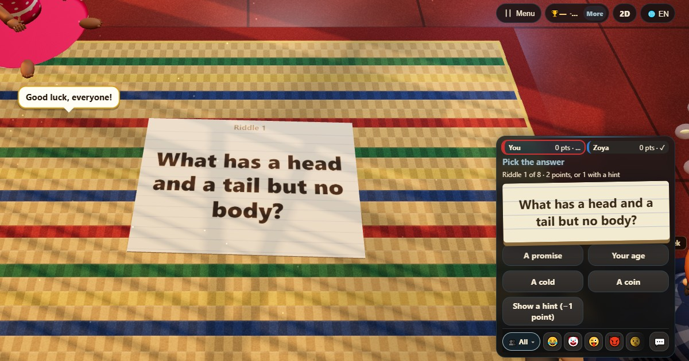

پہیلی پرچیاں (Riddle Chits)
- 👥 2–10 کھلاڑی
- پارٹی گیمز
- 🆓
اردو گائیڈ
پہیلی کھولیں اور جواب چنیں۔ اشارہ لینے پر ایک پوائنٹ۔
English name: Riddle Chits

کیسے کھیلیں
- پرچی پر ایک پہیلی کھلتی ہے کہ سب پڑھیں۔
- جو جواب ٹھیک لگے وہ چنیں۔ سب کے جواب دینے تک کوئی آپ کی پسند نہیں دیکھتا۔
- یقین نہیں؟ جواب سے پہلے اشارہ لیں۔ اس پہیلی کے پوائنٹس کم ہو جاتے ہیں۔
- پھر جواب اور سب کی پسند دکھتی ہے، اور اگلی پرچی کھلتی ہے۔
پوائنٹس کیسے ملتے ہیں
ٹھیک جواب کے 2 پوائنٹس، اشارہ لیا ہو تو 1۔ غلط جواب کا کچھ نہیں۔
کون جیتتا ہے
آخری پہیلی کے بعد سب سے زیادہ پوائنٹس والا جیتتا ہے۔
اکثر پوچھے جانے والے سوالات
کیا پہیلیاں ہر عمر کے لیے ہیں؟
ہاں۔ یہ پرانی، گھر والوں کے ساتھ بوجھنے والی پہیلیاں ہیں۔
کیا دو لوگ کھیل سکتے ہیں؟
ہاں، اور کمپیوٹر کھلاڑی میز بڑی کر سکتے ہیں۔
کیسے کھیلیں
- مہمان کے طور پر: نہ رجسٹریشن نہ لاگ اِن۔ نام چنیں اور فوراً کھیلیں۔
- کمپیوٹر کے ساتھ: کوئی نہ ہو تو خالی جگہیں کمپیوٹر کھلاڑی بھر دیتے ہیں۔ آسان، نارمل یا مشکل۔
- آن لائن: دنیا بھر کے کھلاڑیوں والی کھلی میز پر بیٹھیں۔
- قریب کے دوستوں کے ساتھ: ایک فون پر گیم شروع کریں اور کوڈ یا QR کوڈ بھیجیں۔ دوست اپنے فون سے شامل ہو جاتے ہیں۔
- ایک فون پر: باری باری فون آگے بڑھائیں: پورے گھر کے لیے ایک فون کافی ہے۔
دوسری زبانیں
- हिन्दी: पहेली चिट
- Hinglish: Paheli Chits
- Español: Papelitos de acertijos
- Português: Papeizinhos de charadas
- Français: Papiers à énigmes
- Deutsch: Rätselzettel
- Bahasa Indonesia: Kertas Teka-teki
- Türkçe: Bilmece Kâğıtları
- Italiano: Bigliettini indovinello
- 日本語: なぞなぞ紙
- 한국어: 수수께끼 쪽지
- 中文: 猜谜纸条
- Русский: Загадки на бумажках
- नेपाली: गाउँखाने कथा चिट
- বাংলা: ধাঁধার চিরকুট
- English: Riddle Chits · مکمل اصول (انگریزی)
کھیلوں کے آئیڈیاز
تمام گیمز


ChitPlay میں اصلی پیسے، شرط یا انعام نہیں ہیں۔ پوائنٹس کی کوئی قیمت نہیں۔